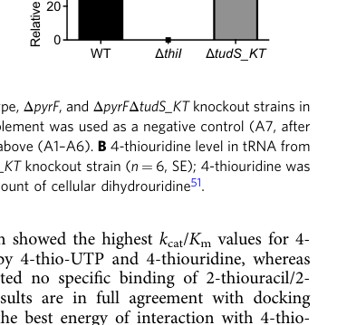

thiI encodes a tRNA sulfurtransferase (EC 2.8.1.4) that catalyzes the ATP-dependent installation of 4-thiouridine (s4U) at position 8 of tRNA, with sulfur supplied by the cysteine desulfurase IscS via a persulfide intermediate. In Pseudomonas putida KT2440, deletion of thiI drastically reduces bulk-tRNA s4U (Fuchs et al. 2023, mass spectrometry), providing direct organism-specific evidence that ThiI is the s4U writer. The HAMAP-Rule annotation also assigns a second sulfur-transfer reaction to the ThiS sulfur-carrier protein, a step in thiazole/thiamine biosynthesis, though this thiamine role is currently an inference from family knowledge rather than KT2440-specific experimental proof.
Definition: Catalysis of sulfur transfer to the sulfur carrier protein ThiS to form ThiS-thiocarboxylate for thiazole biosynthesis.
Justification: ThiI has a second UniProt/Rhea-supported sulfur-transfer reaction to ThiS, but GOA only has broad sulfurtransferase activity plus thiazole/thiamine process annotations.
Parent term: sulfurtransferase activity
Supporting Evidence:
| GO Term | Evidence | Action | Reason |
|---|---|---|---|
|
GO:0000049
tRNA binding
|
IEA
GO_REF:0000104 |
KEEP AS NON CORE |
Summary: tRNA binding is a genuine ThiI activity (the THUMP domain recognizes the tRNA 3'-CCA terminus) but is mechanistic context rather than the core catalytic function.
Reason: ThiI acts on tRNA substrates, so binding is context rather than the core catalytic function. The falcon deep research confirms the THUMP RNA-binding domain captures the tRNA CCA end, consistent with the UniProt THUMP domain annotation (residues 63-167).
Supporting Evidence:
file:PSEPK/thiI/thiI-uniprot.txt
transfer of a sulfur to tRNA
file:PSEPK/thiI/thiI-goa.tsv
GO:0000049 tRNA binding
file:PSEPK/thiI/thiI-deep-research-falcon.md
the **THUMP domain captures the tRNA 3′-CCA terminus**
|
|
GO:0002937
tRNA 4-thiouridine biosynthesis
|
IEA
GO_REF:0000118 |
ACCEPT |
Summary: tRNA 4-thiouridine biosynthesis is the core ThiI biological process and is now backed by direct organism-specific genetic evidence in P. putida KT2440, not merely IEA transfer.
Reason: UniProt describes ATP-dependent sulfur transfer to tRNA to produce 4-thiouridine in position 8, and falcon deep research cites Fuchs et al. 2023 showing that a P. putida KT2440 deletion of thiI drastically reduces bulk-tRNA s4U (mass spectrometry), directly demonstrating that ThiI is the s4U writer in this organism. This is the central biological process for the gene.
Supporting Evidence:
file:PSEPK/thiI/thiI-uniprot.txt
produce 4-thiouridine in position 8 of tRNAs
file:PSEPK/thiI/thiI-goa.tsv
GO:0002937 tRNA 4-thiouridine biosynthesis
file:PSEPK/thiI/thiI-deep-research-falcon.md
deletion of **thiI** causes a **drastic reduction of s4U in bulk tRNA**
file:PSEPK/thiI/thiI-deep-research-falcon.md
a **ΔthiI** strain shows **drastically reduced** s4U relative to wild type
|
|
GO:0003723
RNA binding
|
IEA
GO_REF:0000002 |
MARK AS OVER ANNOTATED |
Summary: RNA binding is a broad parent-style annotation for a tRNA-specific enzyme.
Reason: The tRNA binding and tRNA sulfurtransferase annotations are more informative.
Supporting Evidence:
file:PSEPK/thiI/thiI-goa.tsv
GO:0003723 RNA binding
|
|
GO:0004810
CCA tRNA nucleotidyltransferase activity
|
IEA
GO_REF:0000002 |
REMOVE |
Summary: CCA tRNA nucleotidyltransferase activity is inconsistent with ThiI biology.
Reason: ThiI is a sulfurtransferase/tRNA 4-thiouridine synthase, not a CCA-adding tRNA nucleotidyltransferase; this InterPro-derived row appears to be a bad parent/family propagation.
Supporting Evidence:
file:PSEPK/thiI/thiI-uniprot.txt
tRNA sulfurtransferase
file:PSEPK/thiI/thiI-goa.tsv
GO:0004810 CCA tRNA nucleotidyltransferase activity
|
|
GO:0005524
ATP binding
|
IEA
GO_REF:0000104 |
KEEP AS NON CORE |
Summary: ATP binding is required for the sulfur-transfer chemistry (uridine adenylation) but is not the specific function.
Reason: The core annotation should be tRNA-uracil-4 sulfurtransferase activity. ATP binding is the mechanistic prerequisite - falcon deep research describes ThiI as an ATP-dependent tRNA-modifying enzyme that activates the target uridine by adenylation, consistent with the four UniProt ATP-binding sites.
Supporting Evidence:
file:PSEPK/thiI/thiI-uniprot.txt
ATP-dependent transfer of a sulfur to tRNA
file:PSEPK/thiI/thiI-goa.tsv
GO:0005524 ATP binding
file:PSEPK/thiI/thiI-deep-research-falcon.md
ATP-dependent** tRNA-modifying enzyme
|
|
GO:0005737
cytoplasm
|
IEA
GO_REF:0000120 |
KEEP AS NON CORE |
Summary: Cytoplasm is the expected localization for a bacterial soluble enzyme that acts on mature cellular tRNA.
Reason: Location is useful context but not the defining function. Falcon deep research notes that no KT2440-specific localization experiment exists, but the substrate is cellular tRNA, implying a cytosolic/intracellular site of action consistent with the UniProt cytoplasm annotation.
Supporting Evidence:
file:PSEPK/thiI/thiI-uniprot.txt
SUBCELLULAR LOCATION: Cytoplasm
file:PSEPK/thiI/thiI-goa.tsv
GO:0005737 cytoplasm
file:PSEPK/thiI/thiI-deep-research-falcon.md
acting on mature cellular tRNA
|
|
GO:0005829
cytosol
|
IEA
GO_REF:0000118 |
KEEP AS NON CORE |
Summary: Cytosol is expected localization but redundant with cytoplasm for this review.
Reason: The TreeGrafter cytosol row can be retained as non-core context.
Supporting Evidence:
file:PSEPK/thiI/thiI-goa.tsv
GO:0005829 cytosol
|
|
GO:0009229
thiamine diphosphate biosynthetic process
|
IEA
GO_REF:0000120 |
ACCEPT |
Summary: ThiI contributes to thiamine diphosphate biosynthesis through ThiS sulfur transfer, though the organism-specific evidence is weaker than for the tRNA s4U role.
Reason: UniProt (HAMAP-Rule MF_00021) states that ThiI transfers sulfur to ThiS-thiocarboxylate as a step in thiazole/thiamine biosynthesis, with the second catalytic-activity reaction explicitly annotated. Falcon deep research notes that for KT2440 the thiamine-biosynthesis role remains an inference from ThiI-family knowledge rather than KT2440-specific proof, so this is retained as a well-supported family-level annotation rather than the gene's most directly demonstrated process.
Supporting Evidence:
file:PSEPK/thiI/thiI-uniprot.txt
step in the synthesis of thiazole, in the thiamine biosynthesis pathway
file:PSEPK/thiI/thiI-goa.tsv
GO:0009229 thiamine diphosphate biosynthetic process
file:PSEPK/thiI/thiI-deep-research-falcon.md
any thiamine-biosynthesis role remains an inference from family knowledge
|
|
GO:0016783
sulfurtransferase activity
|
IEA
GO_REF:0000120 |
MARK AS OVER ANNOTATED |
Summary: Sulfurtransferase activity is a broad parent of ThiI's specific tRNA-uracil-4 sulfurtransferase activity.
Reason: The specific tRNA-uracil-4 sulfurtransferase activity (GO:0140741) should be preferred. Falcon deep research describes the canonical ThiI mechanism as an ATP-dependent adenylating sulfurtransferase, but the specific tRNA-acting term is more informative than the broad parent.
Supporting Evidence:
file:PSEPK/thiI/thiI-uniprot.txt
tRNA sulfurtransferase
file:PSEPK/thiI/thiI-goa.tsv
GO:0016783 sulfurtransferase activity
file:PSEPK/thiI/thiI-deep-research-falcon.md
adenylation of the target uridine and sulfur transfer via persulfide chemistry
|
|
GO:0034227
tRNA thio-modification
|
IEA
GO_REF:0000120 |
MARK AS OVER ANNOTATED |
Summary: tRNA thio-modification is correct but less specific than tRNA 4-thiouridine biosynthesis.
Reason: GO:0002937 captures the product and position of ThiI's direct tRNA modification. Falcon deep research confirms ThiI installs 4-thiouridine (s4U) in cellular tRNA, the specific thio-modification, so the broad parent thio-modification term is redundant with the more specific s4U biosynthesis term.
Supporting Evidence:
file:PSEPK/thiI/thiI-uniprot.txt
produce 4-thiouridine in position 8 of tRNAs
file:PSEPK/thiI/thiI-goa.tsv
GO:0034227 tRNA thio-modification
file:PSEPK/thiI/thiI-deep-research-falcon.md
responsible for installing **4-thiouridine (s4U)** in cellular tRNA
|
|
GO:0052837
thiazole biosynthetic process
|
IEA
GO_REF:0000120 |
ACCEPT |
Summary: Thiazole biosynthesis is supported by ThiI sulfur transfer to the ThiS sulfur-carrier protein.
Reason: UniProt (HAMAP-Rule MF_00021) explicitly links the ThiS sulfur-carrier reaction to thiazole synthesis in thiamine biosynthesis. Falcon deep research corroborates that ThiI links to thiamine (thiazole) biosynthesis at the family level, while noting this role is a ThiI-family inference rather than a KT2440-specific measurement.
Supporting Evidence:
file:PSEPK/thiI/thiI-uniprot.txt
transfer of sulfur to the sulfur carrier protein ThiS
file:PSEPK/thiI/thiI-goa.tsv
GO:0052837 thiazole biosynthetic process
file:PSEPK/thiI/thiI-deep-research-falcon.md
links to **thiamine (thiazole) biosynthesis**
|
|
GO:0140741
tRNA-uracil-4 sulfurtransferase activity
|
IEA
GO_REF:0000120 |
ACCEPT |
Summary: tRNA-uracil-4 sulfurtransferase activity is the specific core molecular function, supported by EC 2.8.1.4/Rhea and by genetic evidence that thiI is required for tRNA s4U in KT2440.
Reason: The EC/Rhea-supported UniProt entry describes the ATP-dependent sulfur transfer to tRNA uridine. Falcon deep research adds the mechanistic model (ATP-dependent adenylation of the target uridine followed by sulfur transfer via a persulfide supplied by the cysteine desulfurase IscS) and the KT2440-specific loss-of-function evidence, making this the best-supported molecular function.
Supporting Evidence:
file:PSEPK/thiI/thiI-uniprot.txt
ATP-dependent transfer of a sulfur to tRNA
file:PSEPK/thiI/thiI-goa.tsv
GO:0140741 tRNA-uracil-4 sulfurtransferase activity
file:PSEPK/thiI/thiI-deep-research-falcon.md
ATP-dependent thiolation of uridine in tRNA to form 4-thiouridine (s4U), typically at position 8
file:PSEPK/thiI/thiI-deep-research-falcon.md
sulfur is mobilized from **L-cysteine by the cysteine desulfurase IscS**
|
Q: How is ThiI flux partitioned between tRNA 4-thiouridine synthesis and ThiS sulfur transfer in KT2440?
Q: Which cysteine desulfurase (IscS-like) is the in vivo sulfur donor for ThiI in P. putida KT2440? The IscS-persulfide model is inferred from E. coli by homology but has not been biochemically reconstituted in this organism.
Experiment: Quantify tRNA s4U and thiamine/thiazole pathway intermediates in thiI mutants that separate tRNA-binding and ThiS-transfer surfaces.
Type: separation-of-function mutant analysis
Experiment: In vitro reconstitution of the KT2440 ThiI sulfur relay with candidate cysteine desulfurases to identify the physiological persulfide donor and confirm the active-site cysteine (homologous to E. coli Cys456) used for sulfur transfer.
Type: biochemical reconstitution
The research report should be a detailed narrative explaining the function, biological processes, and localization of the gene product. Citations should be given for all claims.
You should prioritize authoritative reviews and primary scientific literature when conducting research. You can supplement
this with annotations you find in gene/protein databases, but these can be outdated or inaccurate.
We are specifically interested in the primary function of the gene - for enzymes, what reaction is catalyzed, and what is the substrate specificity? For transporters, what is the substrate? For structural proteins or adapters, what is the broader structural role? For signaling molecules, what is the role in the pathway.
We are interested in where in or outside the cell the gene product carries out its function.
We are also interested in the signaling or biochemical pathways in which the gene functions. We are less interested in broad pleiotropic effects, except where these elucidate the precise role.
Include evidence where possible. We are interested in both experimental evidence as well as inference from structure, evolution, or bioinformatic analysis. Precise studies should be prioritized over high-throughput, where available.
The Pseudomonas putida KT2440 gene thiI (UniProt Q88CY4) encodes a tRNA sulfurtransferase (tRNA 4-thiouridine synthase; EC 2.8.1.4) responsible for installing 4-thiouridine (s4U) in cellular tRNA. In P. putida KT2440, deletion of thiI causes a drastic reduction of s4U in bulk tRNA, directly supporting this assignment. In contrast, deletion of tudS_KT does not alter tRNA s4U levels, demonstrating that ThiI is the s4U “writer” while TudS is functionally distinct (a recycling/desulfidation enzyme acting on small-molecule 4-thio-nucleotide derivatives). (fuchs2023tudsdesulfidasesrecycle pages 6-7, fuchs2023tudsdesulfidasesrecycle media fa9f0ea0)
4-thiouridine (s4U) is a post-transcriptional sulfur modification of uridine found in bacterial (and some archaeal) tRNAs, typically at position 8 in the tRNA core. It is one of the best-studied tRNA sulfur modifications and contributes to tRNA structural stability and can participate in light/UV-associated physiology because s4U is UV-reactive. (rajakovich2012functionalanalysisof pages 1-2)
ThiI is the canonical enzyme family responsible for tRNA uridine C4 thiolation to generate s4U. ThiI is an ATP-dependent tRNA-modifying enzyme (PP-loop/adenylation chemistry) that uses a sulfur donor supplied by cellular sulfur trafficking pathways (classically via cysteine desulfurases such as IscS). (hori2023transferrnamodification pages 5-7, shigi2021biosynthesisanddegradation pages 7-8)
Recent work has clarified that bacteria can also encode “eraser”/recycling activities acting on s4U-containing molecules:
* TudS (DUF523) enzymes are Fe–S cluster-dependent desulfidases that preferentially act on 4-thiouridine-5′-monophosphate (4-thio-UMP) rather than intact thiolated tRNA, consistent with a role in recycling/detoxifying tRNA degradation products. (fuchs2023tudsdesulfidasesrecycle pages 1-2)
* RudS enzymes (TudS fused to DUF1722) are described as tRNA s4U de-modifying enzymes (“erasers”) that can remove s4U from intact tRNA in vivo. (jamontas2024rudsbacterialdesulfidase pages 1-1)
This is critical for annotation: ThiI is the biosynthetic writer of s4U, while TudS/RudS represent distinct, downstream removal/recycling functions. (fuchs2023tudsdesulfidasesrecycle pages 6-7, jamontas2024rudsbacterialdesulfidase pages 1-1)
ThiI catalyzes ATP-dependent conversion of a tRNA uridine to 4-thiouridine (s4U) (classically at U8). The reaction proceeds via uridine activation by adenylation followed by sulfur transfer to the C4 position of uridine. (hori2023transferrnamodification pages 5-7, shigi2021biosynthesisanddegradation pages 7-8)
ThiI is a tRNA-binding enzyme. Reviews emphasize that the THUMP domain captures the tRNA 3′-CCA terminus, and proper tRNA architecture is essential for catalysis. (hori2023transferrnamodification pages 5-7)
Authoritative mechanistic summaries describe a canonical bacterial pathway:
1. Cysteine desulfurase IscS mobilizes sulfur from L-cysteine to form an IscS persulfide.
2. Persulfide sulfur is transferred to ThiI (in E. coli, to a rhodanese-like domain cysteine, classically referenced as Cys456).
3. ThiI uses ATP to activate the target uridine (adenylated intermediate), and a second cysteine (classically Cys344) assists incorporation of sulfur into tRNA, with a disulfide proposed during turnover.
These residue numbers are from E. coli and serve as mechanistic guidance by homology; the specific residue numbering for Q88CY4 was not directly provided in the retrieved corpus. (hori2023transferrnamodification pages 5-7, shigi2021biosynthesisanddegradation pages 7-8, rajakovich2012functionalanalysisof pages 1-2)
ThiI is described as a multi-domain enzyme. Across bacteria, ThiI proteins include:
* an N-terminal ferredoxin-like domain,
* a central THUMP RNA-binding domain,
* a PP-loop (ATP-binding/adenylation) domain,
* and in some lineages a rhodanese-like domain implicated in sulfur transfer.
Reviews emphasize that ThiI architecture varies across taxa (e.g., some bacteria lack a canonical rhodanese domain), indicating mechanistic diversity in how the sulfur is handled. (hori2023transferrnamodification pages 5-7, shigi2021biosynthesisanddegradation pages 7-8, rajakovich2012functionalanalysisof pages 1-2)
Fuchs et al. (2023, Communications Biology, DOI: 10.1038/s42003-023-05450-5, URL: https://doi.org/10.1038/s42003-023-05450-5; published 2023) quantified 4-thiouridine in bulk tRNA by mass spectrometry and reported that a ΔthiI strain shows drastically reduced s4U relative to wild type (normalized to dihydrouridine). This provides direct, strain-specific evidence that P. putida ThiI is the s4U synthase. (fuchs2023tudsdesulfidasesrecycle pages 6-7, fuchs2023tudsdesulfidasesrecycle media fa9f0ea0)
The same study tested ΔtudS_KT and observed virtually no difference in bulk-tRNA s4U versus wild type, concluding that TudS_KT does not act on tRNA-incorporated s4U in vivo in KT2440. (fuchs2023tudsdesulfidasesrecycle pages 6-7)
No KT2440-specific localization experiment was retrieved. However, the substrate is cellular tRNA, implying a cytosolic/intracellular site of action for ThiI (consistent with general tRNA modification biology). (hori2023transferrnamodification pages 5-7, rajakovich2012functionalanalysisof pages 1-2)
Fuchs et al. (2023) provide mechanistic and genetic evidence that TudS enzymes preferentially act on 4-thio-UMP rather than intact thiolated tRNA and that the KT2440 TudS enables growth using 4-thiouracil/4-thiouridine as uracil/uridine sources in minimal media, supporting a recycling/detoxification role for tRNA degradation products. (fuchs2023tudsdesulfidasesrecycle pages 1-2, fuchs2023tudsdesulfidasesrecycle pages 6-7)
This helps functional annotation by cleanly separating pathways:
* ThiI: biosynthesis of s4U in tRNA (writer).
* TudS: salvage/recycling of 4-thio-UMP (not a tRNA eraser in KT2440 under tested conditions). (fuchs2023tudsdesulfidasesrecycle pages 6-7, fuchs2023tudsdesulfidasesrecycle pages 1-2)
Hori (2023, Genes, Jan 2023, DOI: 10.3390/genes14020382, URL: https://doi.org/10.3390/genes14020382) synthesizes structural and mechanistic work on THUMP-domain tRNA modification enzymes including ThiI. It emphasizes the THUMP domain’s role in capturing the tRNA CCA end, the ATP-dependent activation step, and the canonical IscS→ThiI sulfur transfer model in bacteria. (hori2023transferrnamodification pages 5-7, hori2023transferrnamodification pages 17-18)
Jamontas et al. (2024, Nucleic Acids Research, Aug 2024, DOI: 10.1093/nar/gkae716, URL: https://doi.org/10.1093/nar/gkae716; published Aug 2024) report RudS, a widespread enzyme family (TudS fused to DUF1722) that can remove s4U from tRNA.
Key quantitative findings and mechanistic features include:
* Prevalence: 857 homologs in 884 reference genomes; co-occurrence with ThiI in 637 genomes (suggesting frequent pairing of writer and eraser functions). (jamontas2024rudsbacterialdesulfidase pages 6-7)
* Effect size: heterologous expression in E. coli reduced tRNA s4U by 4.7- to 26-fold (RudS_KT reported at the high end). (jamontas2024rudsbacterialdesulfidase pages 6-7, jamontas2024rudsbacterialdesulfidase pages 7-7)
* Cofactor: RudS_KT shows Fe–S features; a ferene assay measured ~1.01 Fe per monomer (interpreted as partial occupancy/damage for an Fe–S enzyme). (jamontas2024rudsbacterialdesulfidase pages 8-9)
* Physiology: RudS_KT overexpression reduced a UVA-induced growth lag from ~105 min to ~60 min, consistent with a role in mitigating UVA-associated s4U stress. (jamontas2024rudsbacterialdesulfidase pages 12-13)
These findings are directly relevant to ThiI functional annotation because they show the s4U mark can be dynamically removed in some bacterial contexts. (jamontas2024rudsbacterialdesulfidase pages 1-1)
Mass spectrometry of bulk tRNA modifications is used as a direct functional readout for thiI activity in P. putida KT2440, where ΔthiI serves as a control showing strong depletion of s4U. (fuchs2023tudsdesulfidasesrecycle pages 6-7, fuchs2023tudsdesulfidasesrecycle media fa9f0ea0)
RudS work uses nanopore-based nano-tRNAseq to infer conversion of s4U back to U at a specific tRNA position in vivo (supporting the “eraser” role). (jamontas2024rudsbacterialdesulfidase pages 7-7)
In KT2440, TudS_KT supports growth when 4-thiouracil/4-thiouridine are provided as exogenous sources, indicating a real cellular implementation of salvage/recycling of sulfur-modified uracil derivatives. This is relevant when interpreting sulfur-modification homeostasis: loss of ThiI affects the tRNA modification mark, while TudS affects how degradation products are recycled. (fuchs2023tudsdesulfidasesrecycle pages 6-7)
Hori (2023) and Shigi (2021) converge on a model where ThiI operates as an ATP-dependent adenylating sulfurtransferase acting on tRNA, with sulfur delivery commonly routed through cysteine desulfurases (e.g., IscS) and persulfide intermediates. (hori2023transferrnamodification pages 5-7, shigi2021biosynthesisanddegradation pages 7-8)
Reviews emphasize that ThiI architecture and sulfur-trafficking solutions vary between lineages (e.g., Firmicutes ThiI proteins lacking a rhodanese domain and different sulfur donors/partner desulfurases). Thus, while the IscS-persulfide model is strongly supported in E. coli and is commonly applied by homology, direct biochemical confirmation in KT2440 is still desirable for substrate/partner specificity. (shigi2021biosynthesisanddegradation pages 7-8, rajakovich2012functionalanalysisof pages 1-2)
Key quantitative results relevant to ThiI/s4U biology from 2023–2024 literature include:
* ΔthiI effect in KT2440: bulk-tRNA s4U levels are drastically reduced in ΔthiI; ΔtudS_KT shows virtually no change vs WT (mass spectrometry; normalization to dihydrouridine). (fuchs2023tudsdesulfidasesrecycle pages 6-7, fuchs2023tudsdesulfidasesrecycle media fa9f0ea0)
* RudS prevalence: 857 homologs in 884 reference genomes; 637 genomes encode both RudS and ThiI. (jamontas2024rudsbacterialdesulfidase pages 6-7)
* RudS effect size on tRNA s4U: 4.7–26-fold decreases upon heterologous overexpression. (jamontas2024rudsbacterialdesulfidase pages 6-7)
* UVA phenotype modulation: growth-lag reduced ~105 min → ~60 min with RudS_KT overexpression after UVA exposure. (jamontas2024rudsbacterialdesulfidase pages 12-13)
* RudS Fe content (proxy for Fe–S cofactor occupancy): ~1.01 Fe per monomer reported by ferene assay. (jamontas2024rudsbacterialdesulfidase pages 8-9)
thiI (Q88CY4; PP_5045) in Pseudomonas putida KT2440 encodes a cytosolic tRNA uridine sulfurtransferase required for biosynthesis of tRNA 4-thiouridine (s4U), an ATP-dependent modification installed in tRNA (classically U8). The canonical mechanism involves adenylation of the target uridine and sulfur transfer via persulfide chemistry supplied by cysteine desulfurase pathways (IscS-like), though direct biochemical identification of the sulfur donor/partner in KT2440 was not captured in the retrieved corpus. (hori2023transferrnamodification pages 5-7, fuchs2023tudsdesulfidasesrecycle pages 6-7, shigi2021biosynthesisanddegradation pages 7-8, fuchs2023tudsdesulfidasesrecycle media fa9f0ea0)
| Aspect | Evidence summary | Key sources (year + DOI/URL) |
|---|---|---|
| Identity | The target is ThiI / PP_5045 / UniProt Q88CY4 from Pseudomonas putida KT2440, annotated as a tRNA sulfurtransferase / tRNA 4-thiouridine synthase in the ThiI family. In P. putida KT2440, deletion of thiI drastically reduces bulk tRNA 4-thiouridine (s4U), supporting that this gene is the organism’s bona fide s4U-forming ThiI rather than the distinct TudS/RudS desulfurases (fuchs2023tudsdesulfidasesrecycle pages 6-7). | Fuchs et al., 2023, Communications Biology, published 2023, DOI: 10.1038/s42003-023-05450-5, https://doi.org/10.1038/s42003-023-05450-5; Hori, 2023, Genes, Jan 2023, DOI: 10.3390/genes14020382, https://doi.org/10.3390/genes14020382 |
| Reaction | Current understanding is that ThiI catalyzes ATP-dependent thiolation of uridine in tRNA to form 4-thiouridine (s4U), typically at position 8. The mechanistic model is adenylation of the target uridine followed by sulfur transfer to C4 of uridine (hori2023transferrnamodification pages 5-7, shigi2021biosynthesisanddegradation pages 7-8, rajakovich2012functionalanalysisof pages 1-2). | Hori, 2023, https://doi.org/10.3390/genes14020382; Shigi, 2021, Nov 2021, DOI: 10.3390/ijms222111937, https://doi.org/10.3390/ijms222111937; Rajakovich et al., 2012, Jul 2012, DOI: 10.1128/JB.00842-12, https://doi.org/10.1128/JB.00842-12 |
| Substrates | Substrates are tRNA containing the target uridine plus ATP; the THUMP-containing RNA-binding region recognizes tRNA and the 3′-CCA end is important/essential for catalysis in ThiI systems. The PP-loop domain activates the tRNA uridine by adenylation (hori2023transferrnamodification pages 5-7, shigi2021biosynthesisanddegradation pages 7-8, rajakovich2012functionalanalysisof pages 1-2). | Hori, 2023, https://doi.org/10.3390/genes14020382; Shigi, 2021, https://doi.org/10.3390/ijms222111937; Rajakovich et al., 2012, https://doi.org/10.1128/JB.00842-12 |
| Sulfur donor | In the canonical bacterial mechanism summarized from E. coli and related systems, sulfur is mobilized from L-cysteine by the cysteine desulfurase IscS, transferred as a persulfide to ThiI, then inserted into tRNA. This is the best-supported mechanistic inference for P. putida ThiI, although the cited conversation does not include a P. putida-specific biochemical reconstitution of sulfur transfer (hori2023transferrnamodification pages 5-7, hori2023transferrnamodification pages 17-18, shigi2021biosynthesisanddegradation pages 7-8, rajakovich2012functionalanalysisof pages 1-2). | Hori, 2023, https://doi.org/10.3390/genes14020382; Shigi, 2021, https://doi.org/10.3390/ijms222111937; Rajakovich et al., 2012, https://doi.org/10.1128/JB.00842-12 |
| Cofactors | ThiI is generally considered ATP-dependent. Many bacterial ThiI enzymes are not Fe–S-cluster dependent, although some archaeal ThiI homologs use Fe–S clusters. For the KT2440 protein, available conversation evidence supports assignment as a canonical bacterial ThiI rather than an Fe–S ThiI; no direct evidence here shows a metal cofactor requirement for Q88CY4 (hori2023transferrnamodification pages 5-7, shigi2021biosynthesisanddegradation pages 7-8). | Hori, 2023, https://doi.org/10.3390/genes14020382; Shigi, 2021, https://doi.org/10.3390/ijms222111937 |
| Domains | Reviews describe ThiI as a multi-domain enzyme with N-terminal ferredoxin-like domain, central THUMP domain for tRNA binding/CCA-end capture, and PP-loop pyrophosphatase / adenylation domain. Some ThiI proteins also carry a C-terminal rhodanese-like domain (RLD) that accepts sulfur; this domain architecture varies across taxa. UniProt annotation for Q88CY4 is consistent with a ThiI-family protein containing ThiI-associated and rhodanese-like features (hori2023transferrnamodification pages 5-7, hori2023transferrnamodification pages 17-18, shigi2021biosynthesisanddegradation pages 7-8, rajakovich2012functionalanalysisof pages 1-2). | Hori, 2023, https://doi.org/10.3390/genes14020382; Shigi, 2021, https://doi.org/10.3390/ijms222111937; Rajakovich et al., 2012, https://doi.org/10.1128/JB.00842-12 |
| Key residues | Canonical ThiI mechanism highlights two catalytic cysteines in E. coli: Cys456 in the rhodanese-like domain receives sulfur from IscS, and Cys344 assists sulfur incorporation, with a disulfide proposed during turnover. These residue numbers are organism-specific and should be treated as homology-based mechanistic guidance, not directly validated numbering for Q88CY4 in the evidence provided here (hori2023transferrnamodification pages 5-7, shigi2021biosynthesisanddegradation pages 7-8, rajakovich2012functionalanalysisof pages 1-2). | Hori, 2023, https://doi.org/10.3390/genes14020382; Shigi, 2021, https://doi.org/10.3390/ijms222111937; Rajakovich et al., 2012, https://doi.org/10.1128/JB.00842-12 |
| Localization | The functional context is intracellular/cytosolic, acting on mature cellular tRNA. No evidence in the cited materials suggests secretion, membrane localization, or periplasmic function; ThiI acts where tRNA sulfur modification occurs (hori2023transferrnamodification pages 5-7, shigi2021biosynthesisanddegradation pages 7-8, rajakovich2012functionalanalysisof pages 1-2). | Hori, 2023, https://doi.org/10.3390/genes14020382; Shigi, 2021, https://doi.org/10.3390/ijms222111937; Rajakovich et al., 2012, https://doi.org/10.1128/JB.00842-12 |
| Pathway links | ThiI sits in the tRNA sulfur-modification network and, in some bacteria, also links to thiamine (thiazole) biosynthesis. The cited reviews and Salmonella/Bacillus studies show that ThiI can be bifunctional or mechanistically diverge across phyla; therefore, for P. putida KT2440 the strongest direct evidence supports the tRNA s4U pathway, while any thiamine-biosynthesis role remains an inference from family knowledge rather than KT2440-specific proof in the cited conversation (hori2023transferrnamodification pages 17-18, rajakovich2012functionalanalysisof pages 1-2). | Hori, 2023, https://doi.org/10.3390/genes14020382; Rajakovich et al., 2012, https://doi.org/10.1128/JB.00842-12 |
| Organism-specific evidence | In P. putida KT2440, ΔthiI drastically reduces tRNA s4U, whereas ΔtudS_KT has virtually no effect on bulk tRNA s4U. This cleanly separates ThiI as the writer of the s4U tRNA modification from TudS as a distinct desulfidase/recycling enzyme acting on 4-thio-UMP/4-thiouracil-derived metabolites, not on intact tRNA in this organism (fuchs2023tudsdesulfidasesrecycle pages 6-7, fuchs2023tudsdesulfidasesrecycle pages 1-2, fuchs2023tudsdesulfidasesrecycle media fa9f0ea0). | Fuchs et al., 2023, Communications Biology, published 2023, DOI: 10.1038/s42003-023-05450-5, https://doi.org/10.1038/s42003-023-05450-5 |
| Annotation caveat | Recent literature introduces RudS as a bona fide bacterial tRNA s4U de-modifying enzyme, but the specific P. putida KT2440 protein discussed in Fuchs et al. 2023 is TudS_KT, which was concluded not to desulfurize intact tRNA in vivo. Thus, ThiI functional annotation for Q88CY4 should not be conflated with TudS/RudS pathways (fuchs2023tudsdesulfidasesrecycle pages 6-7). | Fuchs et al., 2023, https://doi.org/10.1038/s42003-023-05450-5; Hori, 2023, https://doi.org/10.3390/genes14020382 |
Table: This table summarizes the best-supported functional annotation for Pseudomonas putida KT2440 ThiI (Q88CY4/PP_5045), separating organism-specific evidence from broader ThiI-family mechanistic inference. It is useful for distinguishing the s4U-writing activity of ThiI from separate TudS/RudS desulfidase pathways.
References
(fuchs2023tudsdesulfidasesrecycle pages 6-7): J Fuchs, R Jamontas, MH Hoock, and J Oltmanns. Tuds desulfidases recycle 4-thiouridine-5'-monophosphate at a catalytic cluster. Unknown journal, 2023.
(fuchs2023tudsdesulfidasesrecycle media fa9f0ea0): J Fuchs, R Jamontas, MH Hoock, and J Oltmanns. Tuds desulfidases recycle 4-thiouridine-5'-monophosphate at a catalytic cluster. Unknown journal, 2023.
(rajakovich2012functionalanalysisof pages 1-2): Lauren J. Rajakovich, John Tomlinson, and Patricia C. Dos Santos. Functional analysis of bacillus subtilis genes involved in the biosynthesis of 4-thiouridine in trna. Journal of Bacteriology, 194:4933-4940, Jul 2012. URL: https://doi.org/10.1128/jb.00842-12, doi:10.1128/jb.00842-12. This article has 55 citations and is from a peer-reviewed journal.
(hori2023transferrnamodification pages 5-7): Hiroyuki Hori. Transfer rna modification enzymes with a thiouridine synthetase, methyltransferase and pseudouridine synthase (thump) domain and the nucleosides they produce in trna. Genes, 14:382, Jan 2023. URL: https://doi.org/10.3390/genes14020382, doi:10.3390/genes14020382. This article has 15 citations.
(shigi2021biosynthesisanddegradation pages 7-8): Naoki Shigi. Biosynthesis and degradation of sulfur modifications in trnas. International Journal of Molecular Sciences, 22:11937, Nov 2021. URL: https://doi.org/10.3390/ijms222111937, doi:10.3390/ijms222111937. This article has 32 citations.
(fuchs2023tudsdesulfidasesrecycle pages 1-2): J Fuchs, R Jamontas, MH Hoock, and J Oltmanns. Tuds desulfidases recycle 4-thiouridine-5'-monophosphate at a catalytic cluster. Unknown journal, 2023.
(jamontas2024rudsbacterialdesulfidase pages 1-1): Rapolas Jamontas, Audrius Laurynėnas, Deimantė Povilaitytė, Rolandas Meškys, and Agota Aučynaitė. Ruds: bacterial desulfidase responsible for trna 4-thiouridine de-modification. Nucleic Acids Research, 52:10543-10562, Aug 2024. URL: https://doi.org/10.1093/nar/gkae716, doi:10.1093/nar/gkae716. This article has 9 citations and is from a highest quality peer-reviewed journal.
(hori2023transferrnamodification pages 17-18): Hiroyuki Hori. Transfer rna modification enzymes with a thiouridine synthetase, methyltransferase and pseudouridine synthase (thump) domain and the nucleosides they produce in trna. Genes, 14:382, Jan 2023. URL: https://doi.org/10.3390/genes14020382, doi:10.3390/genes14020382. This article has 15 citations.
(jamontas2024rudsbacterialdesulfidase pages 6-7): Rapolas Jamontas, Audrius Laurynėnas, Deimantė Povilaitytė, Rolandas Meškys, and Agota Aučynaitė. Ruds: bacterial desulfidase responsible for trna 4-thiouridine de-modification. Nucleic Acids Research, 52:10543-10562, Aug 2024. URL: https://doi.org/10.1093/nar/gkae716, doi:10.1093/nar/gkae716. This article has 9 citations and is from a highest quality peer-reviewed journal.
(jamontas2024rudsbacterialdesulfidase pages 7-7): Rapolas Jamontas, Audrius Laurynėnas, Deimantė Povilaitytė, Rolandas Meškys, and Agota Aučynaitė. Ruds: bacterial desulfidase responsible for trna 4-thiouridine de-modification. Nucleic Acids Research, 52:10543-10562, Aug 2024. URL: https://doi.org/10.1093/nar/gkae716, doi:10.1093/nar/gkae716. This article has 9 citations and is from a highest quality peer-reviewed journal.
(jamontas2024rudsbacterialdesulfidase pages 8-9): Rapolas Jamontas, Audrius Laurynėnas, Deimantė Povilaitytė, Rolandas Meškys, and Agota Aučynaitė. Ruds: bacterial desulfidase responsible for trna 4-thiouridine de-modification. Nucleic Acids Research, 52:10543-10562, Aug 2024. URL: https://doi.org/10.1093/nar/gkae716, doi:10.1093/nar/gkae716. This article has 9 citations and is from a highest quality peer-reviewed journal.
(jamontas2024rudsbacterialdesulfidase pages 12-13): Rapolas Jamontas, Audrius Laurynėnas, Deimantė Povilaitytė, Rolandas Meškys, and Agota Aučynaitė. Ruds: bacterial desulfidase responsible for trna 4-thiouridine de-modification. Nucleic Acids Research, 52:10543-10562, Aug 2024. URL: https://doi.org/10.1093/nar/gkae716, doi:10.1093/nar/gkae716. This article has 9 citations and is from a highest quality peer-reviewed journal.
(shigi2021biosynthesisanddegradation pages 8-10): Naoki Shigi. Biosynthesis and degradation of sulfur modifications in trnas. International Journal of Molecular Sciences, 22:11937, Nov 2021. URL: https://doi.org/10.3390/ijms222111937, doi:10.3390/ijms222111937. This article has 32 citations.
(rajakovich2012functionalanalysisof pages 2-3): Lauren J. Rajakovich, John Tomlinson, and Patricia C. Dos Santos. Functional analysis of bacillus subtilis genes involved in the biosynthesis of 4-thiouridine in trna. Journal of Bacteriology, 194:4933-4940, Jul 2012. URL: https://doi.org/10.1128/jb.00842-12, doi:10.1128/jb.00842-12. This article has 55 citations and is from a peer-reviewed journal.

id: Q88CY4
gene_symbol: thiI
product_type: PROTEIN
status: DRAFT
taxon:
id: NCBITaxon:160488
label: Pseudomonas putida (strain ATCC 47054 / DSM 6125 / CFBP 8728 / NCIMB 11950 / KT2440)
description: thiI encodes a tRNA sulfurtransferase (EC 2.8.1.4) that catalyzes the ATP-dependent
installation of 4-thiouridine (s4U) at position 8 of tRNA, with sulfur supplied by the cysteine
desulfurase IscS via a persulfide intermediate. In Pseudomonas putida KT2440, deletion of thiI
drastically reduces bulk-tRNA s4U (Fuchs et al. 2023, mass spectrometry), providing direct
organism-specific evidence that ThiI is the s4U writer. The HAMAP-Rule annotation also assigns a
second sulfur-transfer reaction to the ThiS sulfur-carrier protein, a step in thiazole/thiamine
biosynthesis, though this thiamine role is currently an inference from family knowledge rather than
KT2440-specific experimental proof.
existing_annotations:
- term:
id: GO:0000049
label: tRNA binding
evidence_type: IEA
original_reference_id: GO_REF:0000104
review:
summary: tRNA binding is a genuine ThiI activity (the THUMP domain recognizes the tRNA 3'-CCA
terminus) but is mechanistic context rather than the core catalytic function.
action: KEEP_AS_NON_CORE
reason: ThiI acts on tRNA substrates, so binding is context rather than the core catalytic function.
The falcon deep research confirms the THUMP RNA-binding domain captures the tRNA CCA end, consistent
with the UniProt THUMP domain annotation (residues 63-167).
supported_by:
- reference_id: file:PSEPK/thiI/thiI-uniprot.txt
supporting_text: transfer of a sulfur to tRNA
- reference_id: file:PSEPK/thiI/thiI-goa.tsv
supporting_text: "GO:0000049\ttRNA binding"
- reference_id: file:PSEPK/thiI/thiI-deep-research-falcon.md
supporting_text: the **THUMP domain captures the tRNA 3′-CCA terminus**
- term:
id: GO:0002937
label: tRNA 4-thiouridine biosynthesis
evidence_type: IEA
original_reference_id: GO_REF:0000118
review:
summary: tRNA 4-thiouridine biosynthesis is the core ThiI biological process and is now backed by
direct organism-specific genetic evidence in P. putida KT2440, not merely IEA transfer.
action: ACCEPT
reason: UniProt describes ATP-dependent sulfur transfer to tRNA to produce 4-thiouridine in position 8,
and falcon deep research cites Fuchs et al. 2023 showing that a P. putida KT2440 deletion of thiI
drastically reduces bulk-tRNA s4U (mass spectrometry), directly demonstrating that ThiI is the s4U
writer in this organism. This is the central biological process for the gene.
supported_by:
- reference_id: file:PSEPK/thiI/thiI-uniprot.txt
supporting_text: produce 4-thiouridine in position 8 of tRNAs
- reference_id: file:PSEPK/thiI/thiI-goa.tsv
supporting_text: "GO:0002937\ttRNA 4-thiouridine biosynthesis"
- reference_id: file:PSEPK/thiI/thiI-deep-research-falcon.md
supporting_text: deletion of **thiI** causes a **drastic reduction of s4U in bulk tRNA**
- reference_id: file:PSEPK/thiI/thiI-deep-research-falcon.md
supporting_text: a **ΔthiI** strain shows **drastically reduced** s4U relative to wild type
- term:
id: GO:0003723
label: RNA binding
evidence_type: IEA
original_reference_id: GO_REF:0000002
review:
summary: RNA binding is a broad parent-style annotation for a tRNA-specific enzyme.
action: MARK_AS_OVER_ANNOTATED
reason: The tRNA binding and tRNA sulfurtransferase annotations are more informative.
supported_by:
- reference_id: file:PSEPK/thiI/thiI-goa.tsv
supporting_text: "GO:0003723\tRNA binding"
- term:
id: GO:0004810
label: CCA tRNA nucleotidyltransferase activity
evidence_type: IEA
original_reference_id: GO_REF:0000002
review:
summary: CCA tRNA nucleotidyltransferase activity is inconsistent with ThiI biology.
action: REMOVE
reason: ThiI is a sulfurtransferase/tRNA 4-thiouridine synthase, not a CCA-adding tRNA nucleotidyltransferase; this InterPro-derived
row appears to be a bad parent/family propagation.
supported_by:
- reference_id: file:PSEPK/thiI/thiI-uniprot.txt
supporting_text: tRNA sulfurtransferase
- reference_id: file:PSEPK/thiI/thiI-goa.tsv
supporting_text: "GO:0004810\tCCA tRNA nucleotidyltransferase activity"
- term:
id: GO:0005524
label: ATP binding
evidence_type: IEA
original_reference_id: GO_REF:0000104
review:
summary: ATP binding is required for the sulfur-transfer chemistry (uridine adenylation) but is not
the specific function.
action: KEEP_AS_NON_CORE
reason: The core annotation should be tRNA-uracil-4 sulfurtransferase activity. ATP binding is the
mechanistic prerequisite - falcon deep research describes ThiI as an ATP-dependent tRNA-modifying
enzyme that activates the target uridine by adenylation, consistent with the four UniProt ATP-binding
sites.
supported_by:
- reference_id: file:PSEPK/thiI/thiI-uniprot.txt
supporting_text: ATP-dependent transfer of a sulfur to tRNA
- reference_id: file:PSEPK/thiI/thiI-goa.tsv
supporting_text: "GO:0005524\tATP binding"
- reference_id: file:PSEPK/thiI/thiI-deep-research-falcon.md
supporting_text: ATP-dependent** tRNA-modifying enzyme
- term:
id: GO:0005737
label: cytoplasm
evidence_type: IEA
original_reference_id: GO_REF:0000120
review:
summary: Cytoplasm is the expected localization for a bacterial soluble enzyme that acts on mature
cellular tRNA.
action: KEEP_AS_NON_CORE
reason: Location is useful context but not the defining function. Falcon deep research notes that no
KT2440-specific localization experiment exists, but the substrate is cellular tRNA, implying a
cytosolic/intracellular site of action consistent with the UniProt cytoplasm annotation.
supported_by:
- reference_id: file:PSEPK/thiI/thiI-uniprot.txt
supporting_text: 'SUBCELLULAR LOCATION: Cytoplasm'
- reference_id: file:PSEPK/thiI/thiI-goa.tsv
supporting_text: "GO:0005737\tcytoplasm"
- reference_id: file:PSEPK/thiI/thiI-deep-research-falcon.md
supporting_text: acting on mature cellular tRNA
- term:
id: GO:0005829
label: cytosol
evidence_type: IEA
original_reference_id: GO_REF:0000118
review:
summary: Cytosol is expected localization but redundant with cytoplasm for this review.
action: KEEP_AS_NON_CORE
reason: The TreeGrafter cytosol row can be retained as non-core context.
supported_by:
- reference_id: file:PSEPK/thiI/thiI-goa.tsv
supporting_text: "GO:0005829\tcytosol"
- term:
id: GO:0009229
label: thiamine diphosphate biosynthetic process
evidence_type: IEA
original_reference_id: GO_REF:0000120
review:
summary: ThiI contributes to thiamine diphosphate biosynthesis through ThiS sulfur transfer, though the
organism-specific evidence is weaker than for the tRNA s4U role.
action: ACCEPT
reason: UniProt (HAMAP-Rule MF_00021) states that ThiI transfers sulfur to ThiS-thiocarboxylate as a
step in thiazole/thiamine biosynthesis, with the second catalytic-activity reaction explicitly
annotated. Falcon deep research notes that for KT2440 the thiamine-biosynthesis role remains an
inference from ThiI-family knowledge rather than KT2440-specific proof, so this is retained as a
well-supported family-level annotation rather than the gene's most directly demonstrated process.
supported_by:
- reference_id: file:PSEPK/thiI/thiI-uniprot.txt
supporting_text: step in the synthesis of thiazole, in the thiamine biosynthesis pathway
- reference_id: file:PSEPK/thiI/thiI-goa.tsv
supporting_text: "GO:0009229\tthiamine diphosphate biosynthetic process"
- reference_id: file:PSEPK/thiI/thiI-deep-research-falcon.md
supporting_text: any thiamine-biosynthesis role remains an inference from family knowledge
- term:
id: GO:0016783
label: sulfurtransferase activity
evidence_type: IEA
original_reference_id: GO_REF:0000120
review:
summary: Sulfurtransferase activity is a broad parent of ThiI's specific tRNA-uracil-4 sulfurtransferase
activity.
action: MARK_AS_OVER_ANNOTATED
reason: The specific tRNA-uracil-4 sulfurtransferase activity (GO:0140741) should be preferred. Falcon
deep research describes the canonical ThiI mechanism as an ATP-dependent adenylating sulfurtransferase,
but the specific tRNA-acting term is more informative than the broad parent.
supported_by:
- reference_id: file:PSEPK/thiI/thiI-uniprot.txt
supporting_text: tRNA sulfurtransferase
- reference_id: file:PSEPK/thiI/thiI-goa.tsv
supporting_text: "GO:0016783\tsulfurtransferase activity"
- reference_id: file:PSEPK/thiI/thiI-deep-research-falcon.md
supporting_text: adenylation of the target uridine and sulfur transfer via persulfide chemistry
- term:
id: GO:0034227
label: tRNA thio-modification
evidence_type: IEA
original_reference_id: GO_REF:0000120
review:
summary: tRNA thio-modification is correct but less specific than tRNA 4-thiouridine biosynthesis.
action: MARK_AS_OVER_ANNOTATED
reason: GO:0002937 captures the product and position of ThiI's direct tRNA modification. Falcon deep
research confirms ThiI installs 4-thiouridine (s4U) in cellular tRNA, the specific thio-modification,
so the broad parent thio-modification term is redundant with the more specific s4U biosynthesis term.
supported_by:
- reference_id: file:PSEPK/thiI/thiI-uniprot.txt
supporting_text: produce 4-thiouridine in position 8 of tRNAs
- reference_id: file:PSEPK/thiI/thiI-goa.tsv
supporting_text: "GO:0034227\ttRNA thio-modification"
- reference_id: file:PSEPK/thiI/thiI-deep-research-falcon.md
supporting_text: responsible for installing **4-thiouridine (s4U)** in cellular tRNA
- term:
id: GO:0052837
label: thiazole biosynthetic process
evidence_type: IEA
original_reference_id: GO_REF:0000120
review:
summary: Thiazole biosynthesis is supported by ThiI sulfur transfer to the ThiS sulfur-carrier protein.
action: ACCEPT
reason: UniProt (HAMAP-Rule MF_00021) explicitly links the ThiS sulfur-carrier reaction to thiazole
synthesis in thiamine biosynthesis. Falcon deep research corroborates that ThiI links to thiamine
(thiazole) biosynthesis at the family level, while noting this role is a ThiI-family inference rather
than a KT2440-specific measurement.
supported_by:
- reference_id: file:PSEPK/thiI/thiI-uniprot.txt
supporting_text: transfer of sulfur to the sulfur carrier protein ThiS
- reference_id: file:PSEPK/thiI/thiI-goa.tsv
supporting_text: "GO:0052837\tthiazole biosynthetic process"
- reference_id: file:PSEPK/thiI/thiI-deep-research-falcon.md
supporting_text: links to **thiamine (thiazole) biosynthesis**
- term:
id: GO:0140741
label: tRNA-uracil-4 sulfurtransferase activity
evidence_type: IEA
original_reference_id: GO_REF:0000120
review:
summary: tRNA-uracil-4 sulfurtransferase activity is the specific core molecular function, supported
by EC 2.8.1.4/Rhea and by genetic evidence that thiI is required for tRNA s4U in KT2440.
action: ACCEPT
reason: The EC/Rhea-supported UniProt entry describes the ATP-dependent sulfur transfer to tRNA uridine.
Falcon deep research adds the mechanistic model (ATP-dependent adenylation of the target uridine
followed by sulfur transfer via a persulfide supplied by the cysteine desulfurase IscS) and the
KT2440-specific loss-of-function evidence, making this the best-supported molecular function.
supported_by:
- reference_id: file:PSEPK/thiI/thiI-uniprot.txt
supporting_text: ATP-dependent transfer of a sulfur to tRNA
- reference_id: file:PSEPK/thiI/thiI-goa.tsv
supporting_text: "GO:0140741\ttRNA-uracil-4 sulfurtransferase activity"
- reference_id: file:PSEPK/thiI/thiI-deep-research-falcon.md
supporting_text: ATP-dependent thiolation of uridine in tRNA to form 4-thiouridine (s4U), typically at position 8
- reference_id: file:PSEPK/thiI/thiI-deep-research-falcon.md
supporting_text: sulfur is mobilized from **L-cysteine by the cysteine desulfurase IscS**
references:
- id: GO_REF:0000002
title: Gene Ontology annotation through association of InterPro records with GO terms
findings: []
- id: GO_REF:0000104
title: Electronic Gene Ontology annotations created by transferring manual GO annotations between related proteins based
on shared sequence features
findings: []
- id: GO_REF:0000118
title: TreeGrafter-generated GO annotations
findings: []
- id: GO_REF:0000120
title: Combined Automated Annotation using Multiple IEA Methods
findings: []
- id: file:PSEPK/thiI/thiI-uniprot.txt
title: UniProtKB reviewed entry for thiI
findings:
- supporting_text: 'Catalyzes the ATP-dependent transfer of a sulfur to tRNA to produce 4-thiouridine
in position 8 of tRNAs'
reference_section_type: DATABASE_ENTRY
- supporting_text: Also catalyzes the transfer of sulfur to the sulfur carrier protein ThiS, forming
ThiS-thiocarboxylate. This is a step in the synthesis of thiazole, in the thiamine biosynthesis pathway.
The sulfur is donated as persulfide by IscS.
reference_section_type: DATABASE_ENTRY
- id: file:PSEPK/thiI/thiI-goa.tsv
title: QuickGO GOA annotations for thiI
findings:
- supporting_text: "GO:0140741\ttRNA-uracil-4 sulfurtransferase activity"
reference_section_type: DATABASE_ENTRY
- id: file:interpro/panther/PTHR43209/PTHR43209-metadata.yaml
title: PANTHER family metadata for thiI
findings:
- statement: PANTHER places ThiI in the tRNA sulfurtransferase family.
- id: file:PSEPK/thiI/thiI-deep-research-falcon.md
title: 'Falcon deep research report: thiI (Q88CY4, PP_5045) in Pseudomonas putida KT2440'
findings:
- supporting_text: deletion of **thiI** causes a **drastic reduction of s4U in bulk tRNA**, directly
supporting this assignment
reference_section_type: OTHER
- supporting_text: encodes a **tRNA sulfurtransferase (tRNA 4-thiouridine synthase; EC 2.8.1.4)**
responsible for installing **4-thiouridine (s4U)** in cellular tRNA
reference_section_type: OTHER
- supporting_text: ATP-dependent thiolation of uridine in tRNA to form 4-thiouridine (s4U), typically
at position 8
reference_section_type: OTHER
- supporting_text: the **THUMP domain captures the tRNA 3′-CCA terminus**, and proper tRNA architecture
is essential for catalysis
reference_section_type: OTHER
- supporting_text: sulfur is mobilized from **L-cysteine by the cysteine desulfurase IscS**, transferred
as a **persulfide** to ThiI, then inserted into tRNA
reference_section_type: OTHER
- supporting_text: a **ΔthiI** strain shows **drastically reduced** s4U relative to wild type
reference_section_type: OTHER
- supporting_text: the strongest direct evidence supports the **tRNA s4U pathway**, while any thiamine-biosynthesis
role remains an inference from family knowledge rather than KT2440-specific proof
reference_section_type: OTHER
- supporting_text: The functional context is **intracellular/cytosolic**, acting on mature cellular tRNA
reference_section_type: OTHER
core_functions:
- description: ATP-dependent tRNA-uracil-4 sulfurtransferase that also sulfurylates ThiS for thiazole/thiamine biosynthesis.
molecular_function:
id: GO:0140741
label: tRNA-uracil-4 sulfurtransferase activity
directly_involved_in:
- id: GO:0002937
label: tRNA 4-thiouridine biosynthesis
- id: GO:0052837
label: thiazole biosynthetic process
supported_by:
- reference_id: file:PSEPK/thiI/thiI-uniprot.txt
supporting_text: produce 4-thiouridine in position 8 of tRNAs
- reference_id: file:PSEPK/thiI/thiI-uniprot.txt
supporting_text: transfer of sulfur to the sulfur carrier protein ThiS
- reference_id: file:PSEPK/thiI/thiI-deep-research-falcon.md
supporting_text: deletion of **thiI** causes a **drastic reduction of s4U in bulk tRNA**
- reference_id: file:PSEPK/thiI/thiI-deep-research-falcon.md
supporting_text: ATP-dependent thiolation of uridine in tRNA to form 4-thiouridine (s4U), typically at position 8
proposed_new_terms:
- proposed_name: ThiS sulfur-carrier protein sulfurtransferase activity
proposed_definition: Catalysis of sulfur transfer to the sulfur carrier protein ThiS to form ThiS-thiocarboxylate for thiazole
biosynthesis.
justification: ThiI has a second UniProt/Rhea-supported sulfur-transfer reaction to ThiS, but GOA only has broad sulfurtransferase
activity plus thiazole/thiamine process annotations.
proposed_parent:
id: GO:0016783
label: sulfurtransferase activity
supported_by:
- reference_id: file:PSEPK/thiI/thiI-uniprot.txt
supporting_text: transfer of sulfur to the sulfur carrier protein ThiS
- reference_id: file:PSEPK/thiI/thiI-uniprot.txt
supporting_text: forming ThiS-thiocarboxylate
suggested_questions:
- question: How is ThiI flux partitioned between tRNA 4-thiouridine synthesis and ThiS sulfur transfer in KT2440?
- question: Which cysteine desulfurase (IscS-like) is the in vivo sulfur donor for ThiI in P. putida KT2440?
The IscS-persulfide model is inferred from E. coli by homology but has not been biochemically reconstituted
in this organism.
suggested_experiments:
- description: Quantify tRNA s4U and thiamine/thiazole pathway intermediates in thiI mutants that separate tRNA-binding and
ThiS-transfer surfaces.
experiment_type: separation-of-function mutant analysis
- description: In vitro reconstitution of the KT2440 ThiI sulfur relay with candidate cysteine desulfurases
to identify the physiological persulfide donor and confirm the active-site cysteine (homologous to E. coli
Cys456) used for sulfur transfer.
experiment_type: biochemical reconstitution
{kind=link}